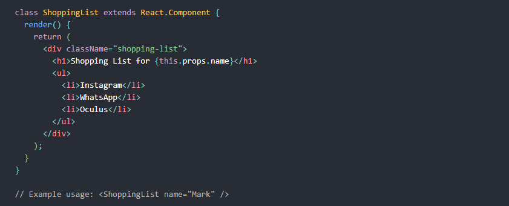
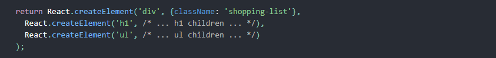

Server Side Rendering
Server-side rendering (SSR) is when content on your webpage is rendered on the server and not on your browser using JavaScript. The web browser submits a request for information from the server, which instantly responds by sending a fully rendered page to the client.
React
React is the most popular front-end JavaScript library for building user interfaces. React can also render on the server using Node and power mobile apps using React Native.
React is a declarative, efficient, and flexible JavaScript library for building user interfaces. It lets you compose complex UIs from small and isolated pieces of code called “components”.
React has a few different kinds of components, but we'll start with React.Component subclasses:
Here, ShoppingList is a React component class, or React component type. A component takes in parameters, called props (short for “properties”), and returns a hierarchy of views to display via the render method.
The render method returns a description of what you want to see on the screen. React takes the description and displays the result. In particular, render returns a React element, which is a lightweight description of what to render. Most React developers use a special syntax called “JSX” which makes these structures easier to write. The <div /> syntax is transformed at build time to React.createElement('div'). The example above is equivalent to:
JSX comes with the full power of JavaScript. You can put any JavaScript expressions within braces inside JSX. Each React element is a JavaScript object that you can store in a variable or pass around in your program.
The ShoppingList component above only renders built-in DOM components like <div /> and <li />. But you can compose and render custom React components too. For example, we can now refer to the whole shopping list by writing <ShoppingList />. Each React component is encapsulated and can operate independently; this allows you to build complex UIs from simple components.
Next.js
Next.js is an open-source development framework built on top of Node.js enabling React based web applications functionalities such as server-side rendering and generating static websites.
Working on a modern JavaScript application powered by React is awesome until you realize that there are a couple problems related to rendering all the content on the client-side.
Continue Reading →After.js
After.js is an open-source JavaScript framework for developing SSR (Server Side Rendering) based applications. It is similar to the Next.js framework for server-rendered React apps but uses React Router instead of a folder structure based router like Next.js
Continue Reading →